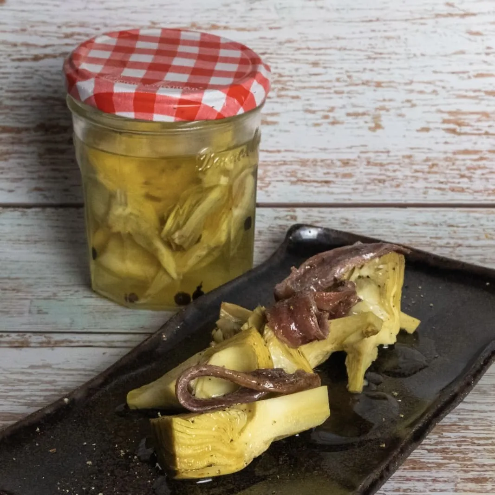

⏲ 35 minuts 👥 2 potets

Ja us hem ensenyat a fer conserves en alguna ocasió, i avui apostem per les carxofes, ideals per
tenir un roc a la faixa per a qualsevol moment. El resultat és gustós i amb una textura
espectacular. Us proposem acabar-les amb alguna anxova, però en podeu fer el que vulgueu.
Ingredients:
- 2kg de carxofes
- 2 llimones
- Julivert
- 2 cullerades soperes de sal
- Grans de pebre
- Anxoves
- Aigua
- Oli
- Omplim un bol amb aigua, hi afegim el suc de dues llimones i les llimones, i una mica de julivert.
- Treiem les fulles exteriors de les carxofes, el tronc i les puntes, les tallem a quarts i en netegem els pelets interiors. Les anem posant al bol amb aigua per evitar que s’oxidin.
- Posem les carxofes dins de pots de vidre ben nets i esterilitzats. Hi afegim també un quart de llimona, grans de pebre, la sal i cobrim fins dalt amb aigua. Tanquem el pot ben tancat i ho sacsegem.
- Posem els pots dins d’una olla, coberts totalment amb aigua freda. Portem a ebullició i deixem 10 minuts des que arranqui el bull. No toquem els pots i deixem que es refredin a dins l’olla, fins que l’aigua estigui totalment freda, i ja tindrem feta la conserva.
- Quan les vulguem consumir ho podem fer directament, marcades en una paella per intensificar el gust, o acompanyades d’unes anxoves, com us proposem.